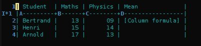
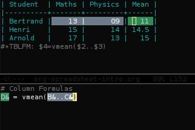

Org as a spreadsheet system: a short introduction
Table of Contents
{Back to Worg’s index} – {Ce tutoriel en français}
Introduction
This short tutorial will go through the basics that you need to know if you want to use Org as a spreadsheet system.
Let’s start with a this very simple table:
| Student | Maths | Physics |
|---|---|---|
| Bertrand | 13 | 09 |
| Henri | 15 | 14 |
| Arnold | 17 | 13 |
Which is the output of this table in Org:
| Student | Maths | Physics | |----------+-------+---------| | Bertrand | 13 | 09 | | Henri | 15 | 14 | | Arnold | 17 | 13 |
The purpose of this tutorial is to understand how to get from this simple table to this one, where we have the mean per student and per discipline:
| Student | Maths | Physics | Mean |
|---|---|---|---|
| Bertrand | 13 | 09 | 11 |
| Henri | 15 | 14 | 14.5 |
| Arnold | 17 | 13 | 15 |
| Means | 15 | 12 | 13.5 |
Getting acquainted with references
Let’s start with the mean per student.
| Student | Maths | Physics | Mean | |----------+-------+---------+-----------| | Bertrand | 13 | 09 | [Formula] | | Henri | 15 | 14 | | | Arnold | 17 | 13 | |
Before being able to insert a formula in [Formula], you need to know
how to refer to a row, a column or a single field.
The easiest way to learn about references is to type C-c ? while you
are in a field.
For example, if you are in the [Formula] field, C-c ? will tell
you: line @2, col $4, ref @2$4 or D2, meaning that you are on the
second row (or line) of the fourth column, and the reference for this
field is either @2$4 or D2.
At any moment, if you are lost in rows and columns, you can always
turn on the reference visualization grid with C-c }:

Your first formula
Put the cursor in the (empty) [Formula] field. Now type
:=vmean($2..$3) in this field. This formula means: calculate the
mean for fields from the second ($2) to the third ($3) field in
this row. If you prefer to use the other notation, type
:=vmean(B&..C&) – where the & character stands for “in this row”,
which is implicit in the previous notation.
While still in the row, hit C-c C-c – you should observe two
things: 1) the formula has been replaced by the result of the
calculation and 2) a new line starting with #+TBLFM has been
inserted at the bottom of the table.
The #+TBLFM line contains all the formulas for the table above, and
you should be careful while editing it manually.
Column formulas and field formulas
Ok, so now we have this table:
| Student | Maths | Physics | Mean | |----------+-------+---------+------| | Bertrand | 13 | 09 | 11 | | Henri | 15 | 14 | | | Arnold | 17 | 13 | | #+TBLFM: @2$4=vmean($2..$3)
But what we really want is to compute the formulas for all fields in
the column named “Mean”. In other words, we really want a column
formula, not a field formula.
To replace the formula with a column formula, go back to the field
where it has been defined and type =vmean($2..$3). Note that the
only difference with what you’ve inserted previously is that the
formula is prefixed by = instead of :=. When you’re done, do a
C-c C-c in the field: you should be prompted whether you want to
replace the formula with a column formula, which is precisely what we
want.
Once you agree with this, the value in the field should be the same
than before (namely 11) and you can now update all the fields in
this column by reapplying all formulas with C-u C-c * (or C-c
C-c if you’re on the #+TBLFM line.)
So now we have this table:
| Student | Maths | Physics | Mean | |----------+-------+---------+------| | Bertrand | 13 | 09 | 11 | | Henri | 15 | 14 | 14.5 | | Arnold | 17 | 13 | 15 | #+TBLFM: $4=vmean($2..$3)
As our single formula in #+TBLFM now applies to the entire column,
it doesn’t contain any reference to a row. The formula was previously
applied for the @2$4 field, and it is now applied for the $4
column.
Finally, we can add the row for the means per discipline. This row contains two field formulas, each one calculating the mean for the fields above in the same column:
| Student | Maths | Physics | Mean | |----------+-------+---------+------| | Bertrand | 13 | 09 | 11 | | Henri | 15 | 14 | 14.5 | | Arnold | 17 | 13 | 15 | |----------+-------+---------+------| | Means | 15 | 12 | | #+TBLFM: $4=vmean($2..$3)::@5$2=vmean(@2$2..@4$2)::@5$3=vmean(@2$3..@4$3)
Which brings up this table:
| Student | Maths | Physics | Mean |
|---|---|---|---|
| Bertrand | 13 | 09 | 11 |
| Henri | 15 | 14 | 14.5 |
| Arnold | 17 | 13 | 15 |
| Means | 15 | 12 |
Interactively edit formulas
For now we have been defining formulas by inserting them directly in
the table cells: typing = in a field starts the definition for a
column formula and typing := starts a definition for a field
formula.
If you prefer, you can edit formulas in the minibuffer: use C-c =
for editing column formulas or C-u C-c = for field formulas.
But you can also edit formulas more interactively in a dedicated buffer by typing C-c ’. This new buffer lists all the formulas for the table at point and provides facilities to edit the references.
When the cursor is above a reference, the corresponding field in the
table get highlighted. Nice! But you can do more than that: you can
actually select the reference by using the S-<left/right/up/down>
keys.

Note: you might worry that moving a table’s column with
M-<left/right> or a table’s row with M-<up/down> might confuse the
references in the #+TBLFM line, but each move automagically updates
the references in this line.
Calc and Elisp formulas
The default syntax for formulas is the one of Calc, the GNU Emacs package for doing computations.
Here is an excerpt from the Calc manual about algebraic-style formulas:
Algebraic formulas use the operators `+', `-', `*', `/', and `^'. You can use parentheses to make the order of evaluation clear. In the absence of parentheses, `^' is evaluated first, then `*', then `/', then finally `+' and `-'. For example, the expression 2 + 3*4*5 / 6*7^8 - 9 is equivalent to 2 + ((3*4*5) / (6*(7^8)) - 9
In org tables, you can use references instead of values for performing the computation. Pretty simple.
But what if you want to use Emacs lisp code instead of Calc?
Lets say for example that you want to associate each student with a decimal of the Pi number, depending on their mean across maths and physics.
For this you need to tell Org about the value you consider to be the value of the Pi number. You can do this by adding this line:
#+CONSTANTS: pi=3.14159265358979323846
(Don’t forget to hit C-c C-c on the #+CONSTANTS line so that
org-mode knows about it.)
Then you can define an Emacs lisp formula like this one:
$5='(substring (number-to-string $pi) (round $4) (1+ (round $4)));N
Ahem. Let’s parse this:
(substring S A B): get a substring of stringSbetweenAandB(number-to-string $pi): convert the constant “Pi” into a string(round $4): get the rounded value of the value in column$4;N: consider the values of fields to be numeric values, not strings.
If the mean of a student is 10, this formula returns the tenth decimal of Pi.
Debugging formulas
So now our table is this one:
| Student | Maths | Physics | Mean | Pi number | |----------+-------+---------+------+-----------| | Bertrand | 13 | 09 | 11 | 5 | | Henri | 15 | 14 | 14.5 | 7 | | Arnold | 17 | 13 | 15 | 9 | #+TBLFM: $4=vmean($2..$3)::$5='(substring (number-to-string $pi) (round $4) (1+ (round $4)));N
If you come back to this table but feel a bit lazy trying to understand what the Emacs Lisp function does, you might as well want to debug the formula and follow the computation step by step.
Turn the formulas debugger on with C-c { and hit C-c C-c in a
field (or C-u C-c * anywhere on this table.) This will perform the
computations of the formulas one by one, and display details about the
steps of the computation for each formula in a separate buffer.
Here is what such a buffer looks like:
Substitution history of formula Orig: '(substring (number-to-string $pi) (round $4) (1+ (round $4)));N $xyz-> '(substring (number-to-string 3.14159265358979323846) (round $4) (1+ (round $4))) @r$c-> '(substring (number-to-string 3.14159265358979323846) (round $4) (1+ (round $4))) $1-> '(substring (number-to-string 3.14159265358979323846) (round 11) (1+ (round 11))) Result: 5 Format: NONE Final: 5
Once you’re done checking the formulas, you can switch the debugger
off by hitting C-c { again.
Much, much more…
Using Org as a spreadsheet system turns to be really handy.
But you can do a lot more than that! You can use relative references, define names for columns and parameters for formulas, define fields that should be automatically recalculated, etc. You can also use Emacs lisp in formulas (read this tutorial).
Have a look to the advanced features in Org-mode manual, it will give you a quick overlook on this…